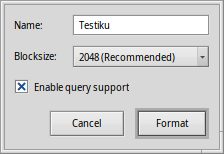

English
English Français
Français Deutsch
Deutsch Italiano
Italiano Русский
Русский Español
Español Svenska
Svenska 日本語
日本語 Українська
Українська 中文 ［中文］
中文 ［中文］ Português
Português DriveSetup
DriveSetup
| Deskbar: | ||
| Location: | /boot/system/apps/DriveSetup | |
| Settings: | ~/config/settings/DriveSetup |
DriveSetup is a tool to create, delete and initialize partitions. At this time it can't resize or move existing partitions, so that you'll either need an unpartitioned volume (perhaps an external USB drive or another harddisk) or do the initial setup with a tool like the GParted LiveCD to provide the space for another partition.

At the top is a graphical representation of all partitions inside the device chosen in the list below it. Besides a maximum of 4 primary partitions, each of those can contain a number of extended/logical partitions. You may have to expand such a list with the +/- widget that appears in that case in front of that device to see the details of every logical partition.
You can select a partition from the list and mount and unmount them with the commands in the menu or by pressing ALT M or ALT U.
You can also completely delete a partition with .
Which brings us to this:
 Creating a new partition
Creating a new partition
When you found unformatted space on a drive, like the above <empty>, you can create a new partition in this space with (ALT C).

You're prompted with this dialog that lets you adjust the partition size and type. Choose if you want to use the partition for an Haiku installation or if you want to use all the interesting Haiku features with it, like attributes and queries. Note, that other operating systems might not be able to access such a partition.
If you have created a primary partition instead of just another extended/logical partition within one, the above dialog also displays an checkbox. You'll have to check that, if you'll use that partition to boot a Haiku installation.
Before you can use, or even mount the newly created partition, it has to be initialized with a filesystem.
Initializing a partition
Only unmounted partitions can be initialized by using the menu.
Here you set the name for the partition and it's blocksize. 2048 bytes per block are recommended, but you can choose larger or smaller sizes if you have these very specific needs.
Initializing will destroy all data on that partition!